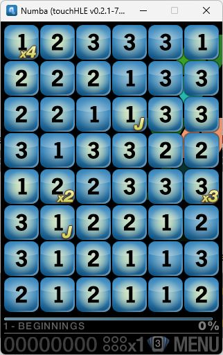
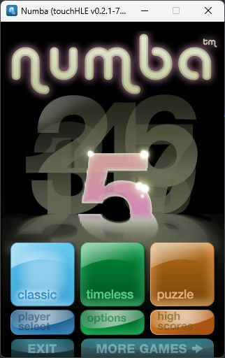

| App name | Numba |
|---|---|
| Release year | |
| Developer/Publisher | I-play/Cobramobile |
| First reported | |
| First reported by | @nighto |
| Version number | Display name | Bundle identifier | Minimum iOS version | Best rating | Last updated | First reported by | |
|---|---|---|---|---|---|---|---|
| 1.0 | Numba | com.cobra.Numba | (not specified) | ⭐️⭐️⭐️⭐️⭐️ | @nighto | ||
| 1.0.0.4 | Numba | com.cobra.Numba | (not specified) | ⭐️⭐️⭐️⭐️⭐️ | @nighto | ||
| 1.0.3 | Numba | com.cobra.Numba | (not specified) | ⭐️⭐️⭐️⭐️⭐️ | @nighto |
| Version number | touchHLE version | Operating system | GPU | Scale hack supported? | Rating | Reported | Reported by | Remarks | Screenshot |
|---|---|---|---|---|---|---|---|---|---|
| 1.0.3 | v0.2.1-82-gcf7b7a5 | Windows 11 | NVIDIA Quadro T2000 | Yes | ⭐️⭐️⭐️⭐️⭐️ | @nighto | |||
| 1.0 | v0.2.1 | Windows 11 | NVIDIA Quadro T2000 | Couldn't test | ⭐️ | @nighto | thread 'main' panicked at 'Attempted to unlock non-error-checking mutex #1 for thread 0, already unlocked!', src\environment\mutex.rs:179:21 | ||
| 1.0 | v0.2.1-78-gd771063 | Windows 11 | NVIDIA Quadro T2000 | Yes | ⭐️⭐️⭐️⭐️⭐️ | @nighto | View | ||
| 1.0.0.4 | v0.2.1 | Windows 11 | NVIDIA Quadro T2000 | Couldn't test | ⭐️ | @nighto | thread 'main' panicked at 'Attempted to unlock non-error-checking mutex #1 for thread 0, already unlocked!', src\environment\mutex.rs:179:21 | ||
| 1.0.0.4 | v0.2.1-78-gd771063 | Windows 11 | NVIDIA Quadro T2000 | Yes | ⭐️⭐️⭐️⭐️⭐️ | @nighto | View |
| Rating | Description |
|---|---|
| ⭐️ | Completely broken: app crashes immediately without any user interaction. |
| ⭐️⭐️ | Only (part of) the main menu, intro or similar is working. |
| ⭐️⭐️⭐️ | Some of the main content of the app works, but with major issues. |
| ⭐️⭐️⭐️⭐️ | The main content of the app works (e.g. entire game is playable) with only small issues. |
| ⭐️⭐️⭐️⭐️⭐️ | Everything works. The app is fully usable. |

